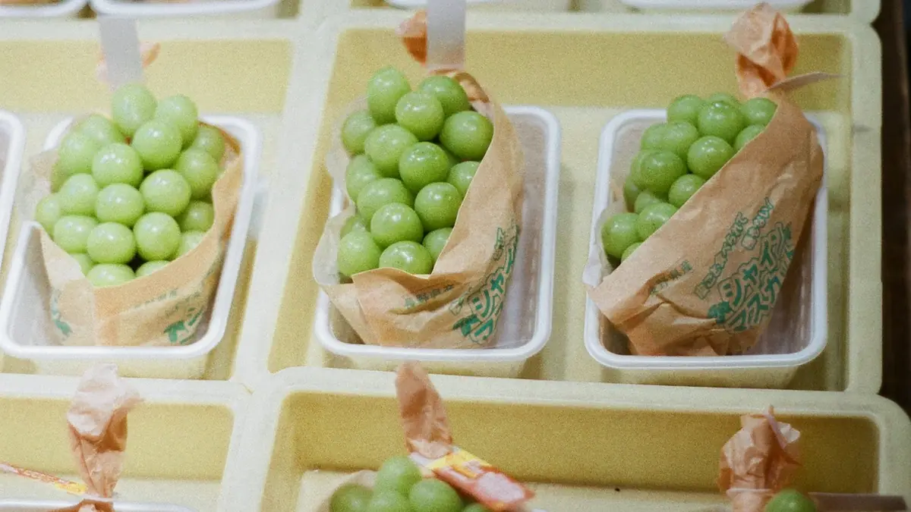

Home › Wine stories › The Twelve Grapes of Luck: Spain's New Year's Eve Ritual
The Twelve Grapes of Luck: Spain's New Year's Eve Ritual

Photo: Jasper Wilde on Unsplash
Why Spaniards swallow a grape on every stroke of midnight, how a bit of Madrid mockery became a national rite, and the bagged Aledo grapes that make it possible.
Spend New Year's Eve in Spain and, a minute before midnight, the whole country goes quiet. Families gather round the television, each person cradling a little bowl of exactly twelve grapes, waiting for the clock on the Real Casa de Correos in Madrid's Puerta del Sol to strike. One grape goes down with each chime, and if you finish all twelve before the last stroke fades, tradition says the coming year will be a lucky one, a grape for every month. Fall behind and you start January with a mouthful of fruit.
Ask a Spaniard where the custom comes from and you will most likely hear about 1909. In the popular version, growers around Alicante had an enormous harvest that winter and cleverly marketed their surplus as 'grapes of luck' to be eaten at midnight. It is a good story, and 1909 does seem to be the year the habit really took off across the country. But it is better treated as part legend, because the newspapers tell us the grapes were already on Madrid's New Year tables well before then.
Spanish press archives mention the ritual from at least the mid-1890s, and a Madrid paper was advertising 'uvas de la suerte' in late December 1898. Historians and food writers point further back still, to the 1880s, when fashionable Madrid families copied a French custom of seeing in the year with Champagne and grapes. Ordinary madrileños, the story goes, began gathering in the Puerta del Sol to eat grapes at midnight in a cheeky parody of their grander neighbours. One account links this to a municipal crackdown on street revelry in 1882, though that detail rests on fewer sources. Either way, the joke stuck and became the real thing.
The clock helped. Crowds have long met beneath the Casa de Correos, and since 1962 Spanish television has broadcast the midnight chimes from the square, so the whole nation now swallows its grapes at the same instant. The custom has since spread across much of Latin America and to the Philippines.
There is a practical puzzle: grapes are normally picked by autumn, so where do fresh ones come from at the end of December? The answer lies in the Vinalopó valley in Alicante. Since around 1920, growers there have wrapped each bunch in a paper bag while it is still on the vine, originally to keep moths away. Protected in their bags, late-ripening varieties such as Aledo can hang until November and December and turn very sweet. Uva de Mesa Embolsada Vinalopó now has its own protected designation, and the bunches must spend at least 60 days bagged.
These are table grapes, not wine grapes, but the ritual has always been close to a glass. The fashion Madrid's smart set borrowed from France paired grapes with Champagne, and in Spain today the twelfth grape is usually followed straight away by a toast.
So if you fancy borrowing the tradition this year, choose small seedless grapes and have them ready in a bowl before the countdown. Then raise a glass of cava, Spain's own traditional-method sparkling wine; a crisp brut nature from Penedès is a perfect way to rinse down twelve months of luck, and the friendliest way to say feliz año nuevo.
Sources
- The Twelve Grapes – Wikipedia
- Twelve Grapes on New Year's Eve – Atlas Obscura
- How government scrooges in 1882 accidentally created Spain's obsession with gobbling 12 grapes on New Year's Eve – The Olive Press
- La verdadera historia de las 12 uvas de Nochevieja – Directo al Paladar
- Uva de Mesa Embolsada Vinalopó PDO – Foods & Wines from Spain (ICEX)
- Mercamadrid prepara 5.000 toneladas de uvas para Nochevieja – Diario de Madrid, Ayuntamiento de Madrid
The Wine Reference newsletter
New wines, stories and career guides, one email a week at most.
Over 18s only. Unsubscribe any time with one click. Your email is stored securely by Kit and never shared.
Support The Wine Reference
This guide is free, with no paywall. If it helped you choose a bottle, you can buy me a glass and keep it growing.
🍷 Buy me a glass